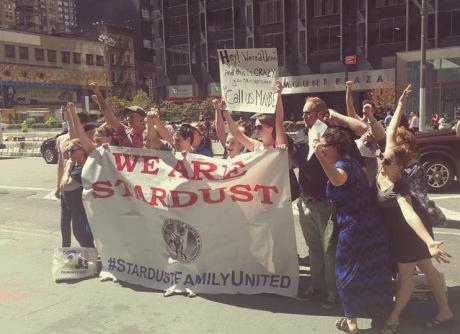

Submitted on Mon, 11/06/2017 - 9:58pm
By LibCom - It's Going Down, October 31, 2017
In an election-driven, workplace-organizing campaign, going public is a key step. The workers or union try to organize under the boss’s radar for as long as possible, so that they can avoid retaliation and union-busting before they accumulate strength in numbers. Eventually, however, they have to legally file or “petition” for an election, at which point the workers notify the employer of their campaign. The goal of these types of organizing drives is formal recognition from the employer, which in theory compels the employer to sit down with the union and negotiate a contract.
In the IWW, our main model of organizing is the “solidarity union.” A solidarity union consists of a group of workers taking direct action in a workplace to get what they need and want, without regard to formal recognition by the bosses. Instead of relying on legal processes, workers use the power they have at any given moment, seeing as their hands are on the levers of production—and therefore on the boss’s profits. Examples of using that power include work slowdowns or stoppages, refusing certain kinds of unsafe work, confronting the boss with problems as a group, and even strikes.
What is the significance of “going public” in a solidarity unionism campaign? If workers are not seeking legal recognition through an election, what purpose does going public serve? Does it need to happen at all? In this article, we reconsider the pros and cons of going public in the context of the IWW’s distinct and powerful alternative to business union organizing.
Does going public heighten the risk of retaliation?
In the Ellen’s Stardust Diner campaign in NYC, IWW restaurant workers went public in the form of a major story in The New York Times. The reporter contacted the owner for comment, and this was the first he had learned of the union. He said he was shocked that people were unhappy, and that he would gladly sit down with them. This turned out to be a lie. Even though the union had gathered the support of virtually all of the servers, the owner refused to meet with them about their demands. In response, union members held a large demonstration outside of the restaurant, displaying a bright, new banner with their name and logo—Stardust Family United—while singing and chanting noisily, to place public and emotional pressure on the boss to bargain.
Two weeks later, every person at that demonstration was illegally fired.
Sometimes, bosses react in the strongest possible way to finding out that a union is forming in their business: by attempting to eliminate union supporters through firings. This is something we know in the IWW, which is why we cover it at length in our organizer trainings.
Stardusters had gone public because they felt it was the next logical step in their organizing. They had already gathered nearly unanimous support among servers, they were meeting regularly, and had learned to act as a group. Now it was time to simply tell the boss point-blank that they were a union, and that they had demands. In a way, they were following the steps of a recognition campaign, just without the NLRB election. They believed the owner would see their strength and negotiate. But the union’s coming-out party didn’t have that result. Instead, the owner started firing people for union activity and hired a union-busting lawyer.
An IWW campaign in Chicago offers an interesting contrast. At Arrow Messenger, the union of messengers did not go public as a “union” – they did not use “the u-word” – but simply approached the boss with specific demands, initiating direct bargaining sessions between the bosses and the workers. When bargaining did not yield the results they wanted, a quickie strike and a series of prolonged direct actions won them most of their demands, including a commission raise for over one hundred couriers.
The avoidance of word “union” may have made it easier for the bosses to give concessions to the workers, but it did not prevent retaliatory firings in the long run, and the active committee of about 20 workers was picked off one by one. So it’s clear that workers can also be fired in an active campaign that isn’t “public” in the traditional sense. If you’re effective, you’re going to end up with a target on your back, one way or another.
Fortunately, at Stardust as well, despite not one but two rounds of mass firings, workers were able to win on a majority of their demands, by using direct action in the workplace. The owner never sat down with them, but by taking on issues one by one, and coordinating work refusals and other tactics, the workers made multiple gains, including refusing unpaid work, fixing unsafe equipment, and generally improved working conditions. Going public, in retrospect, was not a necessary step for that.
 Inmates in Florida's prisons launched a month-long strike on Monday in protest of the state's use of "modern day slavery" within its correctional facilities.
Inmates in Florida's prisons launched a month-long strike on Monday in protest of the state's use of "modern day slavery" within its correctional facilities.